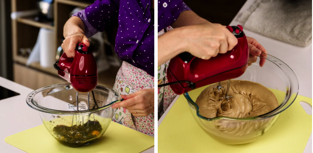
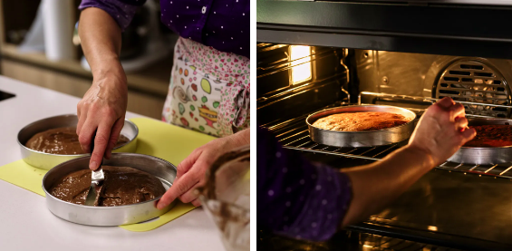
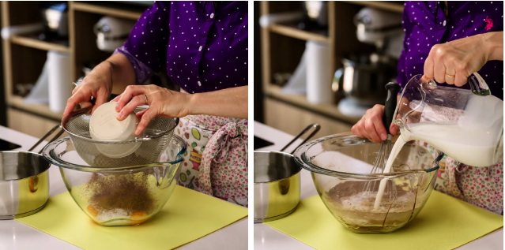
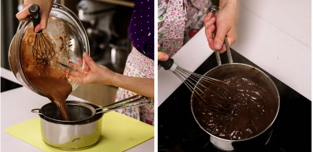
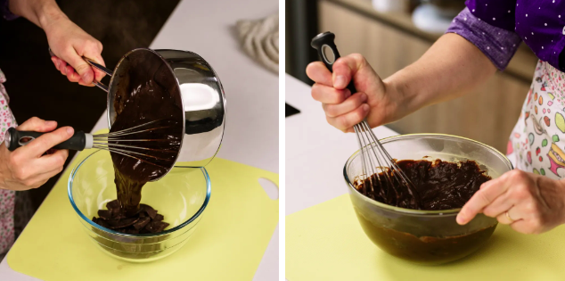
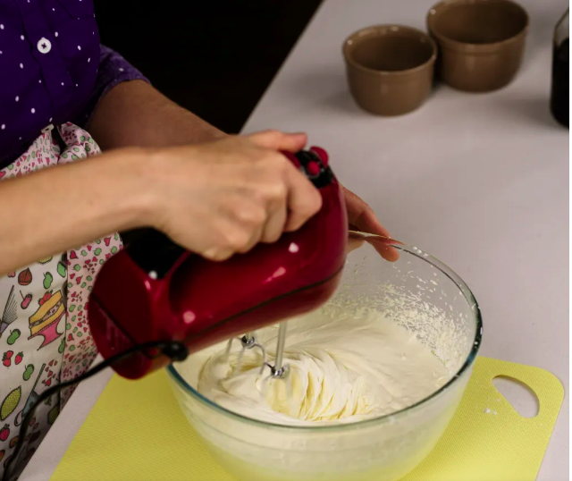

O Bolo Floresta Negra surgiu na região com este mesmo nome, na Alemanha. O segredo para deixá-lo irresistível é caprichar nas cerejas, tanto no recheio quanto na cobertura, diz que também é bom deixar a massa bem molhada com a calda e finalizar com confeitos ou raspas de chocolate. O sucesso é garantido, experimente esta maravilha!!!.
Preparo: 45 minutos
Rendimento: 30 Porçoes
Ingredientes
130 gr de açúcar mascavo.
90 gr de farinha de trigo 0000.
4 ovos.
30 gr de cacau em pó puro.
creme de confeitero de chocolate: 480 ml de leite integral.
3 gemas .
180gr de açúcar.
60 gr de cacau em pó.
40 gr de maizena
150 gr de chocolate meio amargo
Chantilly e calda:
500 ml de Chantilly pronta .
Calda: 100 gr de açúcar
40 ml de agua.
60 ml de licor de cereja
Modo de preparo
ré-aqueça o forno a 170°C.
Prepare 2 formas de bolo não moldáveis de 20cm de diâmetro com papel manteiga na base
Coloque os ovos e o açúcar mascavo em uma tigela.
Bata com uma batedeira elétrica até atingir o ponto da letra/fita

Peneire a farinha e o cacau e adicione ao preparado. Integrar.
Divida a preparação nas duas panelas. Asse por 22 minutos ou até que ao espetar com um palito ele saia seco..

confeiteiro de chocolate
Em uma tigela coloque as gemas e o açúcar branco.
Peneire o cacau e o amido de milho e adicione à preparação.
Coloque um pouco do leite no preparo.

Coloque o restante do leite em uma panela e leve ao fogo.
Quando o leite ferver, despeje sobre a preparação, mexendo vigorosamente
Filtre a preparação e leve de volta ao fogo
Cozinhe, mexendo sempre, até engrossar e ferver.

Quando estiver pronto, despeje sobre a cobertura de chocolate amargo picado.
Deixe alguns minutos até que o chocolate derreta e integre
Quando estiver pronto, despeje sobre a cobertura de chocolate amargo picado.
Deixe alguns minutos até que o chocolate derreta e integre

chantilly
Coloque o creme em uma tigela.
Peneire o açúcar em pó e o leite em pó, juntando-os ao creme.
Adicione a essência de baunilha.
Bata com uma batedeira elétrica até obter uma preparação sustentada.

Para acalda:
Coloque a água, o açúcar e o Kirsch em uma panela Leve ao fogo alto até ferver
Armando o Trifle:
Prepare um recipiente ou tigela de vidro para montar o Triffle
Lave, seque e corte (retirando o caule e o caroço) as cerejas. Reserve alguns para decoração sem cortar.
Desenforme os biscoitos.
Corte o primeiro bolo para que caiba na base da tigela. Nada acontece se estiver um pouco bagunçado, o que importa é que as diferentes camadas da Triffle sejam vistas.
Umedeça o bolo com a calda
Coloque uma camada da massa de chocolate
Adicione uma camada de cerejas e uma camada de creme por cima.
Coloque o segundo bolo e umedeça-o com a calda.
Coloque outra camada de massa e cerejas por cima.
Adicione uma camada de creme no centro, deixando as cerejas e a massa ao redor aparecerem
Decore com as cerejas previamente reservadas para a decoração.